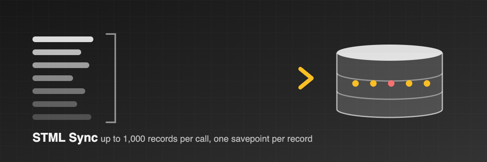

Integration tools that push data into Odoo over RPC usually pay one HTTP round-trip per record. STML Sync adds a single server-side method that creates or updates up to 1,000 records of one model in one call. Every record runs in its own database savepoint: a row that fails validation or access control is rolled back and reported by position, while the other rows of the same batch are committed together.
Measured on Odoo 19 with 2,000 products: re-running a sync where half the prices changed took 4 seconds through the module against 30 seconds record by record.
Returns the module version, the Odoo version and the list of supported capabilities, so a client can detect the module and fall back to stock RPC when it is absent.
Takes a list of records, each with an optional id (update) or none
(create), ORM-ready values, and an optional xml_id that is
created or repaired for the record. Returns one result per record with the record id
and the action taken: created, updated, skipped or error.
With skip_unchanged the server compares the submitted values with the
stored ones and leaves records that would not change untouched, so write dates and
chatter stay clean.
Each call carries a client-minted operation_id. A retry after a timeout
returns the stored result of the first attempt instead of creating duplicates.
Failures are classified as ValidationError, AccessError, MissingError, UserError, IntegrityError or Other, with Odoo's own message, so the caller can decide what to retry and what to report.
Odoo 16, 18 and 19, Community and Enterprise, on-premise or on Odoo.sh. Depends on
base only. Built for the STML sync engine, but any RPC client can call it.
Questions: info@stml.io